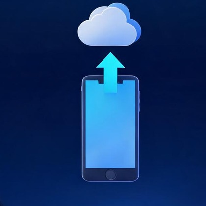
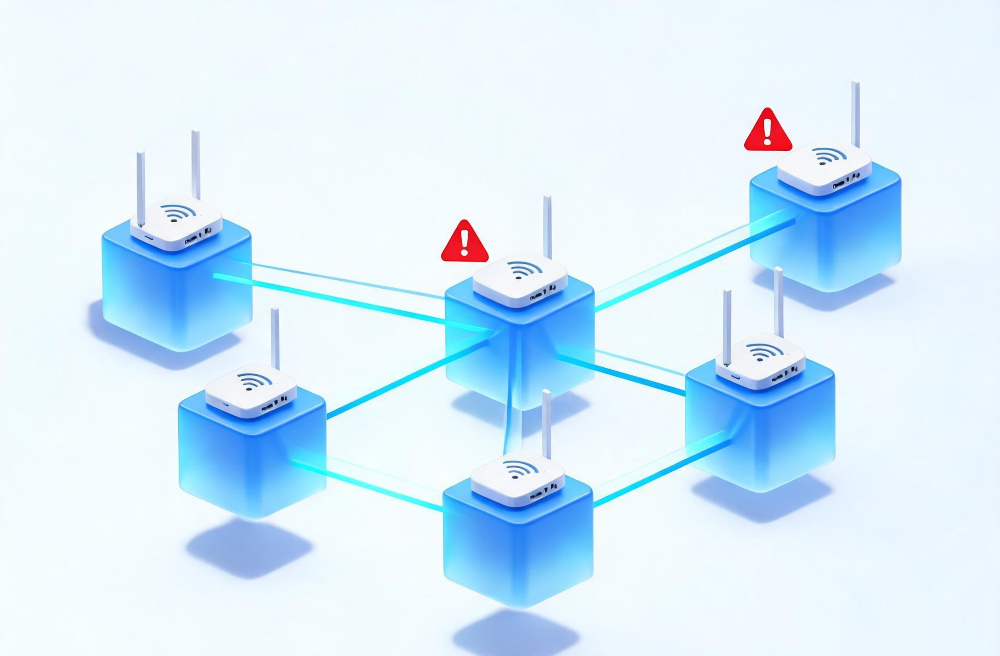
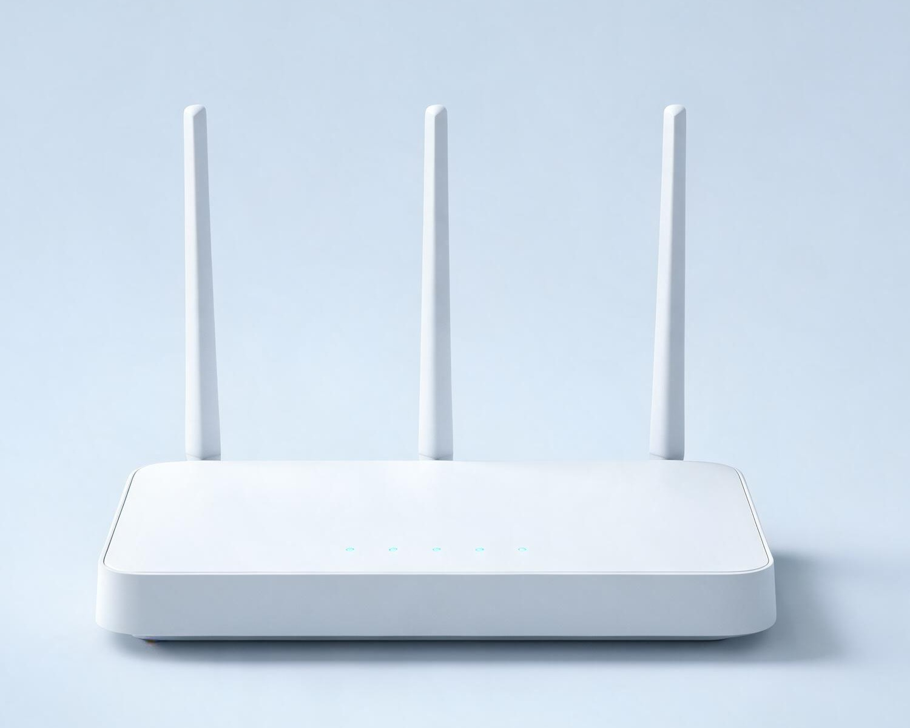

01
你家网络 vs 优质网络
同样是刷视频、打游戏，差距一眼看懂
你家网络
60分
对比
优质网络
85分
你家网络日常够用，但和优质网络比，打游戏、全家一起用时会明显吃亏
02
六大日常场景对比
平时做的事，网络到底够不够用
刷视频 / 追剧
很流畅
你家网络
45.2 MB/s
流畅标准
看 4K 高清、连刷几个小时都基本不卡，一家人同时看也没问题。
视频通话 / 上网课
够用
你家网络
23.8 MB/s
流畅标准
画面清晰、声音不卡，孩子上网课举手互动也够用（上传速度）。
打游戏 / 看直播
高峰期易卡
你家网络
稳定度 62 分
流畅标准
平时能玩，但晚上人多时延迟会跳，游戏容易“瞬移”、直播会转圈。
下载大文件 / 更新游戏
很快
你家网络
45.2 MB/s
流畅标准
下载 1GB 的电影或游戏更新包，大约 23 秒 就能下完。
发视频 / 照片备份
不错

你家网络
23.8 MB/s
流畅标准
传 1GB 视频大约 43 秒，发朋友圈、备份照片都不慢（上传速度）。
全家多设备同时上网
容易卡
你家网络
约 3 台
流畅标准
手机 + 电脑 + 电视同时用还行，再加几台设备就会互相“抢网”变慢。
03
为什么人多的时候会卡？
不是网速不够，是“路太挤”

1
邻居的 WiFi 太多，信号互相“撞车”
附近十几个 WiFi 挤在同样的频段上，就像多条小路汇进同一条道，谁都得排队。
2
你家路由器走的正好是最挤的那条“道”
当前用的信道，周边用的人最多、干扰最重，所以你家最容易被拖慢。
3
上传速度只有下载的一半
发视频、开视频通话靠的是上传，一忙起来就更容易卡住。
04
换个设置，能好多少？
按下面建议调整后的预计效果
打游戏卡顿
高峰期容易跳延迟
→
明显更稳定
多设备同时用
约 3 台就变慢
→
5 台以上不卡
网页打开
约 2.5 秒
→
1 秒内打开
综合体验
60 分
→
85 分左右
05
建议怎么做
照着做，全家上网都更顺畅

给路由器“换条不堵的路”：把信道从 161 换成 44 或 149
路由器放在家里中间、开阔的位置，别塞进柜子里
手机、电视等能连 5G 频段的设备，优先连 5G
路由器太老的话建议换 WiFi6 型号，全家一起用更稳